Imos instalar Docker Desktop empregando os repositorios, para elo seguimos a documentación da páxina de información de docker:
Hai dúas versións para a instalación de Docker-compose, a versión antiga e a versión v2
Para saber a versión que temos podemos executar:
docker-compose versiondocker compose version
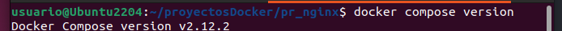O comando para lanzar na versión antiga v1 é docker-compose, cun - entre as dúas palabras. docker-compose up
O comando para lanzar na versión v2 é docker compose sen -, separado por un espazo soamente. docker compose up
Para ver que podemos executar con docker compose escribimos este comando na consola, e amosa as opcións: 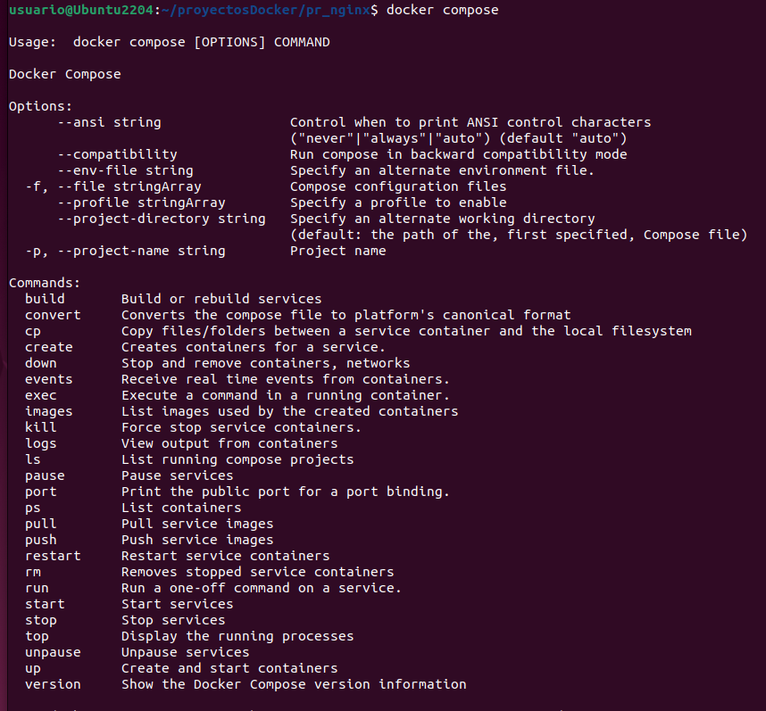
En docker compose, o ficheiro .yaml ou .yml, contén as instruccións para xerar un entorno multicontedor.
Haberá que incluir:
Yaml, é un formato de serialización, non é unha linguaxe de marcado. Convertiuse nun estándar porque é moi bo para crear ficheiros de propiedades ou de características, porque ten unha sintaxe moi estricta.
Está composto con claves: valor, despois dos : vai un espazo en branco. É moi importante manter a indentación.
Por exemplo:
services:
wordpress:
image: wordpress
restart: always
environment:
WORDPRESS_DB_HOST: db
WORDPRESS_DB_USER: exampleuser
WORDPRESS_DB_PASSWORD: examplepass
WORDPRESS_DB_NAME: exampledb
volumes:
- wordpress:/var/www/html
Iniciar un contenedor: up
docker compose up
Para Contenedores: stop
docker compose stop
Deter e eliminar contenedores: down
docker compose down
Este exemplo é moi sinxelo. Imos facer un exemplo co servidor Web nginx.
En Docker-compose trabállase no término de proxecto, que se refire a todo o entorno que imos lanzar co Docker-compose. Así que creamos unha carpeta co nome do proxecto.
mkdir pr_nginx
Creamos dentro o ficheiro docker-compose.yml
version: '3'
services:
nginx:
image: nginx
ports:
- "80:80"
O nome do servizo, neste caso "nginx" é personalizable, poderíamoslle por outro. Sen embargo, a imaxe que imos empregar é do repositorio de imaxes de docker hub, e debe levar o nome da imaxe no repositorio oficial "nginx".
Entramos no directorio do proxecto e lanzamos o ficheiro que acabamos de crear no exemplo anterior:
O comando para lanzar na versión antiga é docker-compose, cun - entre as dúas palabras. docker-compose up
O comando para lanzar na versión v2 é docker compose sen -.
docker compose up
En posteriores exemplos, cando esteamos en produción empregaremos -d para lanzalo en background, pero neste exemplo imos facelo interactivo para ver os resultados que amosan.
A rede que se emprega neste exemplo, é a rede por defecto, aínda que para unir os contenedores, recoméndase crear unha rede propia.
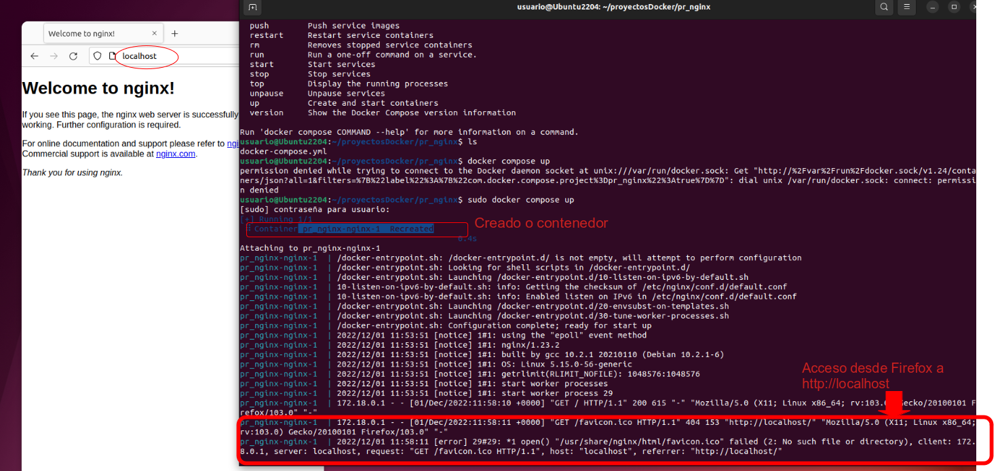
Vese como crea o contedor. Si accedemos desde o navegador a http://localhost:80 vése que está a funcionar o nginx.
Na saída da Consola pode verse como nos conectamos desde un cliente con ip 172.18.0.1, desde un navegador Mozilla e que se accede ao host localhost.
Se facemos agora un docker ps, vemos o contedor que acaba de crear, que vemos que é un contenedor normal, xa que o que fai docker-compose é facilitar a creación dos mesmos.
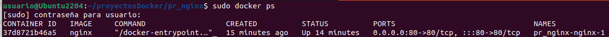
Se facemos un docker compose ps vemos o entorno de microcontedores que creou:
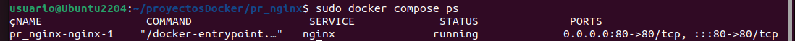
En virtualBox, creamos unha redirección de portos, imos redireccionar o porto 80 do 8080.
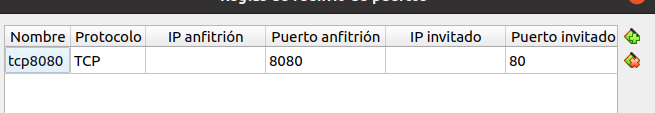
E si conectamos agora desde a nosa máquina host (a física).
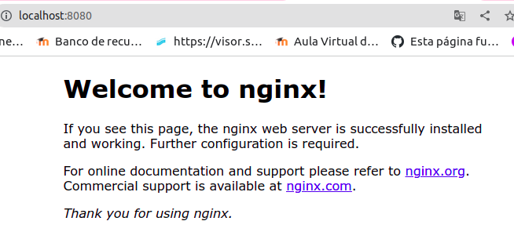
Imos crear:
services:
wordpress:
image: wordpress
restart: always
ports:
- 9090:80
environment:
WORDPRESS_DB_HOST: basedatos
WORDPRESS_DB_USER: wpuser
WORDPRESS_DB_PASSWORD: renaido
WORDPRESS_DB_NAME: bdwordpress
depends_on:
- basedatos
basedatos:
image: mysql
restart: always
environment:
MYSQL_DATABASE: bdwordpress
MYSQL_USER: wpuser
MYSQL_PASSWORD: renaido
MYSQL_ROOT_PASSWORD: Abc123.
Do contedor wordpress:
Do contedor basedatos:
Dentro da carpeta do proxecto, execútasedocker compose up -d, poñemos o -d para facelo en background.
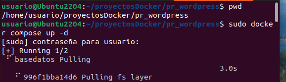
Vése que comeza a cargar o docker de basedatos, xa que no depends_on lle indicamos que o servizo de wordpress dependía de basedatos.
Unha vez que acaba de crear os dous contedores, entramos en http://localhost:9090, e podemos ver que inicia a instalación de wordpress: 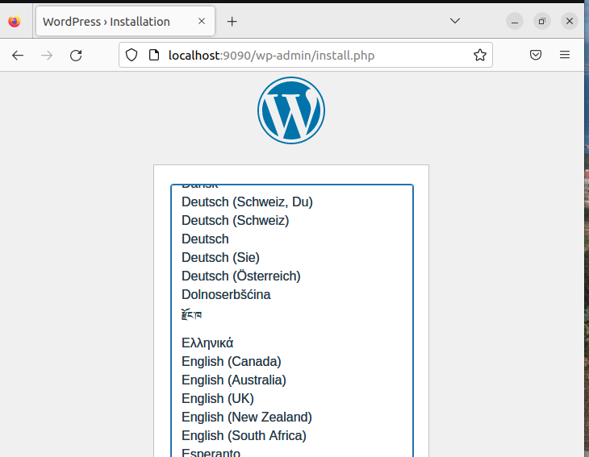
Finalmente aparece finalizada a instalación de wordpress: 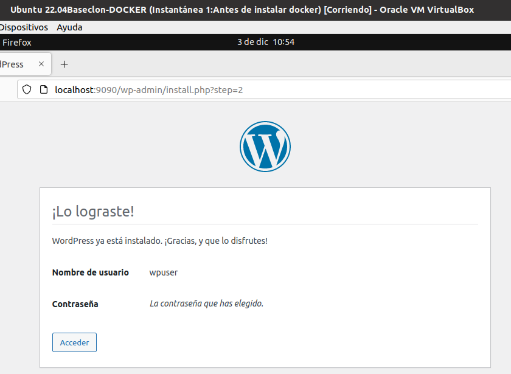.
Agora ao acceder a http://localhost:9090 aparece o xestor de configuración de wordpress:
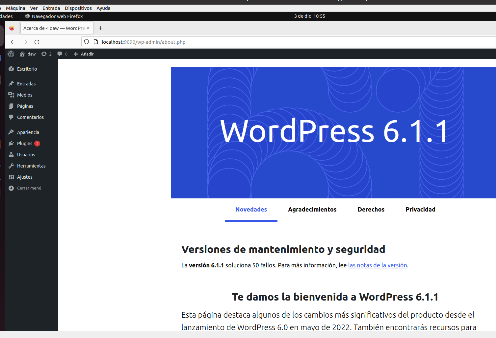
Se executamos sudo docker compose ps vemos os contedores que se están executando:
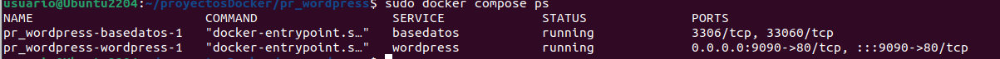
Creamos un espazo persistente, desde o que poder acceder desde a máquina host, á carpeta de configuración de wordpress, neste caso /var/www/html.
Podemos montar:
docker volumes: asigna automáticamente un nome aos volumes, xeralmente é un nome moi longo, polo que non se recomenda esta opción. Logo móntaos en /var/lib/docker/volumes/
named volumes: onde lle damos nós un nome ao volume. Logo dentro da máquina host, se accedemos a /var/lib/docker/volumes/ podemos ver os volumenes compartidos cos contenedores.
bind volume: indicamos no directorio da máquina real no que queremos que comparta o volume, por exemplo: /home/usuario/compartido
Se facemos un docker inspect nomecontedor, pódese ver a configuración, e no mount, aparece que é de tipo bind.
Engadimos o volume para wordpress:
volumes:
-/home/usuario/volumenes:/var/www/html
Indica que indexamos a nosa carpeta de host: /home/usuario/volumenes coa carpeta do servidor /var/www/html
services:
wordpress:
image: wordpress
restart: always
ports:
- 9090:80
environment:
WORDPRESS_DB_HOST: basedatos
WORDPRESS_DB_USER: wpuser
WORDPRESS_DB_PASSWORD: renaido
WORDPRESS_DB_NAME: bdwordpress
depends_on:
- basedatos
volumes:
-/home/usuario/volumenes:/var/www/html
basedatos:
image: mysql
restart: always
ports:
- 3306:3306
environment:
MYSQL_DATABASE: bdwordpress
MYSQL_USER: wpuser
MYSQL_PASSWORD: renaido
MYSQL_ROOT_PASSWORD: Abc123.
Vemos que dentro da carpeta /home/usuario/volumenes teño acceso á carpeta de wordpress /var/www/html.
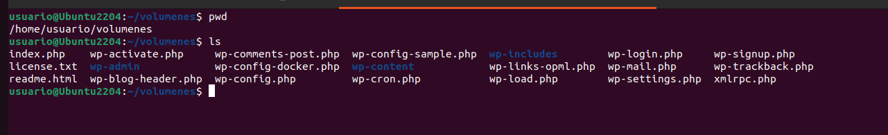
Se queremos comprobar os volúmenes compartidos con docker facemos docker volume ls.
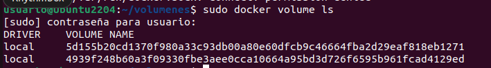
Se quero borrar todos os volumes na máquina host docker volume prune
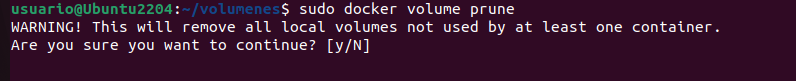